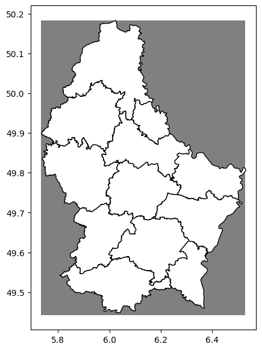

Notebook 1 — Data Acquisition¶
Author: Eun-Kyeong Kim (eun-kyeong.kim@lxp.lu), LuxProvide S.A
Multimodal Flood Inference with TerraMind on MeluXina HPC¶
Goal: Search Microsoft Planetary Computer's STAC catalogue for Sentinel-1 SAR, Sentinel-2 optical, and Copernicus DEM tiles that cover the 2021 Luxembourg flood across four temporal phases (pre-month, pre-event, event, post-event). Save the selected item IDs and asset URLs to a JSON manifest so that Notebook 2 can download and package the data without re-querying the catalogue.
What you will learn¶
- How a STAC catalogue is structured (collections → items → assets)
- How to filter satellite passes by date window, spatial overlap, and image quality
- How to serialise acquisition metadata for reproducible downstream processing
1 · Imports¶
We use:
pystac_client— Python client for querying STAC cataloguesplanetary_computer— signs asset URLs so they are temporarily downloadablegeopandas/shapely— work with geographic geometriespandas— tabular summaries of candidate satellite scenes
from __future__ import annotations
import json
import math
from pathlib import Path
import geopandas as gpd
import pandas as pd
import planetary_computer
import pystac_client
from shapely.geometry import box, shape
import matplotlib.pyplot as plt
2 · Configuration¶
All tunable parameters live here — change them once and the rest of the notebook updates automatically.
| Variable | Meaning |
|---|---|
EVENT["bbox"] |
Bounding box of the study area in WGS-84 lon/lat |
EVENT["phase_dates"] |
One representative date per temporal phase |
S1_WINDOW_DAYS |
Half-width (days) of the search window around each phase date for S1 |
S2_WINDOW_DAYS |
Same for Sentinel-2 (wider because clouds reduce availability) |
S2_MAX_CLOUD |
Maximum allowed cloud-cover percentage for S2 scenes |
# ── Output paths ────────────────────────────────────────────────────────────
ROOT = Path("data/terramind_flood_lux") # top-level data folder
META_ROOT = ROOT / "metadata" # where the manifest JSON is saved
META_ROOT.mkdir(parents=True, exist_ok=True)
# ── Study-area and event definition ─────────────────────────────────────────
# The 2021 Luxembourg flood (July 14–15) was one of the worst in decades,
# caused by extreme rainfall in the Ahr–Moselle catchment.
EVENT = {
"name": "luxembourg_flood_2021_multimodal",
# [west, south, east, north] in WGS-84 degrees
"bbox": [5.7333, 49.4426, 6.5282, 50.1830],
# UTM zone 32N — the projected CRS used for raster packaging in Notebook 2
"target_crs": "EPSG:32632",
# One representative date per temporal phase
"phase_dates": {
"pre_month": "2021-06-15", # ~30 days before the flood peak
"pre_event": "2021-07-11", # a few days before the flood
"event": "2021-07-15", # peak flood day
"post_event": "2021-07-18", # early recovery
},
}
# Fixed order — critical for aligning array time-steps later
PHASE_ORDER = ["pre_month", "pre_event", "event", "post_event"]
# ── STAC collection identifiers ──────────────────────────────────────────────
S1_COLLECTION = "sentinel-1-rtc" # Sentinel-1 Radiometrically Terrain Corrected
S2_COLLECTION = "sentinel-2-l2a" # Sentinel-2 Level-2A (surface reflectance)
DEM_COLLECTION = "cop-dem-glo-30" # Copernicus GLO-30 Digital Elevation Model
# ── Band / asset lists ───────────────────────────────────────────────────────
# These are the asset keys used by Planetary Computer for each collection.
S1_ASSETS = ["vv", "vh"] # dual-polarisation SAR backscatter
S2_ASSETS = [ # 12 multispectral bands (10–60 m native)
"B01", "B02", "B03", "B04",
"B05", "B06", "B07", "B08",
"B8A", "B09", "B11", "B12",
]
# ── Search window parameters ─────────────────────────────────────────────────
# Half-width in days: search ±N days around each phase date.
# SAR scenes are available every ~6 days, so a 4-day window is usually enough.
# Optical scenes may be cloudy, so we use a wider window for S2.
S1_WINDOW_DAYS = 4
S2_WINDOW_DAYS = 10
S2_MAX_CLOUD = 25.0 # reject S2 scenes with >25 % cloud cover
# ── Convenience: Region-of-Interest as a GeoDataFrame ────────────────────────
roi_geom = box(*EVENT["bbox"]) # Shapely Polygon
roi_gdf = gpd.GeoDataFrame({"geometry": [roi_geom]}, crs="EPSG:4326")
roi_gdf
| geometry | |
|---|---|
| 0 | POLYGON ((6.5282 49.4426, 6.5282 50.183, 5.733... |
Visualize the Region of Interest (covering Luxembourg)¶
# 1. Read the GeoJSON file into a GeoDataFrame
admin_geojson = 'https://download.data.public.lu/resources/limites-administratives-du-grand-duche-de-luxembourg/20260405-030017/limadmin.geojson'
admin_gdf = gpd.read_file(admin_geojson)
# 2. Ensure both are in the same CRS (crucial step!)
if admin_gdf.crs != roi_gdf.crs:
admin_gdf = admin_gdf.to_crs(roi_gdf.crs)
# 3. Plot together (Overlay)
fig, ax = plt.subplots(figsize=(7, 7))
roi_gdf.plot(ax=ax, color='gray', markersize=5)
admin_gdf.plot(ax=ax, color='white', edgecolor='black')
plt.show()

3 · STAC catalogue connection and search helpers¶
How STAC works: A STAC catalogue is a web API that lists satellite imagery as items. Each item has a geometry, a date, and a set of named assets (the actual file URLs). We open the Planetary Computer catalogue and define helper functions to:
- Build a date-range string for the search window.
- Compute how much of our region-of-interest (ROI) each candidate scene covers.
- Score and rank candidates so we always pick the "best" scene per phase.
# Open the Planetary Computer STAC catalogue.
# `modifier=planetary_computer.sign_inplace` automatically signs asset URLs
# so they can be downloaded without manual authentication.
catalog = pystac_client.Client.open(
"https://planetarycomputer.microsoft.com/api/stac/v1",
modifier=planetary_computer.sign_inplace,
)
def phase_window(date_str: str, half_window_days: int) -> str:
"""Return an ISO-8601 datetime interval string centred on *date_str*.
Example: phase_window("2021-07-15", 4)
→ "2021-07-11T00:00:00Z/2021-07-19T23:59:59Z"
"""
ts = pd.Timestamp(date_str, tz="UTC")
start = (ts - pd.Timedelta(days=half_window_days)).strftime("%Y-%m-%dT00:00:00Z")
end = (ts + pd.Timedelta(days=half_window_days)).strftime("%Y-%m-%dT23:59:59Z")
return f"{start}/{end}"
def item_geometry(item):
"""Extract a Shapely geometry from a STAC item (prefers .geometry over .bbox)."""
if item.geometry is not None:
return shape(item.geometry)
return box(*item.bbox)
def overlap_fraction(item, roi_polygon):
"""Return the fraction of *roi_polygon* that is covered by *item*'s footprint.
A value of 1.0 means the scene fully covers the ROI.
"""
scene_geom = item_geometry(item)
if scene_geom.is_empty:
return 0.0
intersection = scene_geom.intersection(roi_polygon)
return float(intersection.area / roi_polygon.area)
def safe_timestamp(value):
"""Parse a datetime string to a timezone-aware Timestamp; return NaT on failure."""
return pd.to_datetime(value, utc=True, errors="coerce")
# ── Scene-scoring functions ──────────────────────────────────────────────────
# We want: maximum overlap, minimum distance to the target date, and (for S2)
# minimum cloud cover. Sorting by `score_tuple` puts the best candidate first.
def s1_score(item, phase_date: str) -> dict:
"""Compute a sortable score for a Sentinel-1 RTC scene.
Priority (ascending): higher overlap first, then closer to the phase date.
"""
props = item.properties
dt = safe_timestamp(props.get("datetime") or props.get("start_datetime"))
target = pd.Timestamp(phase_date, tz="UTC")
days_off = abs((dt.normalize() - target.normalize()).days) if pd.notnull(dt) else 999
overlap = overlap_fraction(item, roi_geom)
return {
"item": item,
"datetime": dt,
"days_from_phase": days_off,
"aoi_overlap_frac": overlap,
"relative_orbit": props.get("sat:relative_orbit"),
"orbit_state": props.get("sat:orbit_state"),
# Tuple used for sorting: negate overlap so that larger → lower sort key
"score_tuple": (-overlap, days_off, str(dt),
str(props.get("sat:relative_orbit")),
str(props.get("sat:orbit_state"))),
}
def s2_score(item, phase_date: str) -> dict:
"""Compute a sortable score for a Sentinel-2 L2A scene.
Priority: higher overlap first, then lower cloud cover, then closer date.
"""
props = item.properties
dt = safe_timestamp(props.get("datetime") or props.get("start_datetime"))
target = pd.Timestamp(phase_date, tz="UTC")
days_off = abs((dt.normalize() - target.normalize()).days) if pd.notnull(dt) else 999
overlap = overlap_fraction(item, roi_geom)
cloud = float(props.get("eo:cloud_cover", 1000.0))
return {
"item": item,
"datetime": dt,
"days_from_phase": days_off,
"aoi_overlap_frac": overlap,
"eo:cloud_cover": cloud,
"score_tuple": (-overlap, cloud, days_off, str(dt)),
}
def search_phase_items(collection: str, phase_date: str,
half_window_days: int, query: dict | None = None):
"""Query the STAC catalogue and return all matching items as a list."""
search = catalog.search(
collections=[collection],
bbox=EVENT["bbox"],
datetime=phase_window(phase_date, half_window_days),
query=query or {},
)
return list(search.items())
4 · Select best S1 and S2 scenes for each phase¶
For each of the four temporal phases we:
- Query the catalogue within the date window.
- Keep only candidates that have all required assets (band files present).
- Score and sort the candidates.
- Pick the top-ranked scene.
This loop populates two summary tables — s1_df and s2_df — that list the
chosen scenes with their quality metrics.
s1_rows = [] # will hold one dict per phase
s2_rows = []
for phase in PHASE_ORDER:
phase_date = EVENT["phase_dates"][phase]
# ── Sentinel-1 ────────────────────────────────────────────────────────
# Require dual-polarisation (VV + VH) acquisitions only.
s1_items = search_phase_items(
S1_COLLECTION,
phase_date=phase_date,
half_window_days=S1_WINDOW_DAYS,
query={"sar:polarizations": {"eq": ["VV", "VH"]}},
)
# Filter to scenes that actually contain both VV and VH asset files,
# then score and rank.
s1_candidates = [
s1_score(item, phase_date)
for item in s1_items
if all(k in item.assets for k in S1_ASSETS)
]
s1_candidates.sort(key=lambda r: r["score_tuple"])
if not s1_candidates:
raise RuntimeError(f"No S1 RTC candidates found for phase '{phase}'. "
"Try widening S1_WINDOW_DAYS.")
best_s1 = s1_candidates[0]
s1_rows.append({
"phase": phase,
"collection": S1_COLLECTION,
"id": best_s1["item"].id,
"datetime": best_s1["datetime"],
"days_from_phase": best_s1["days_from_phase"],
"aoi_overlap_frac": best_s1["aoi_overlap_frac"],
"orbit_state": best_s1["orbit_state"],
"relative_orbit": best_s1["relative_orbit"],
# Signed download URLs — used by Notebook 2
"vv_href": best_s1["item"].assets["vv"].href,
"vh_href": best_s1["item"].assets["vh"].href,
})
# ── Sentinel-2 ────────────────────────────────────────────────────────
s2_items = search_phase_items(
S2_COLLECTION,
phase_date=phase_date,
half_window_days=S2_WINDOW_DAYS,
query={"eo:cloud_cover": {"lt": S2_MAX_CLOUD}},
)
s2_candidates = [
s2_score(item, phase_date)
for item in s2_items
if all(k in item.assets for k in S2_ASSETS)
]
s2_candidates.sort(key=lambda r: r["score_tuple"])
if not s2_candidates:
raise RuntimeError(f"No S2 L2A candidates found for phase '{phase}'. "
"Try increasing S2_MAX_CLOUD or widening S2_WINDOW_DAYS.")
best_s2 = s2_candidates[0]
s2_rows.append({
"phase": phase,
"collection": S2_COLLECTION,
"id": best_s2["item"].id,
"datetime": best_s2["datetime"],
"days_from_phase": best_s2["days_from_phase"],
"aoi_overlap_frac": best_s2["aoi_overlap_frac"],
"eo:cloud_cover": best_s2["eo:cloud_cover"],
# One signed URL per spectral band
**{f"{band}_href": best_s2["item"].assets[band].href for band in S2_ASSETS},
})
# ── Display summary tables ────────────────────────────────────────────────
s1_df = pd.DataFrame(s1_rows).sort_values("phase").reset_index(drop=True)
s2_df = pd.DataFrame(s2_rows).sort_values("phase").reset_index(drop=True)
print("Selected Sentinel-1 scenes:")
display(s1_df[["phase", "id", "datetime", "days_from_phase",
"aoi_overlap_frac", "orbit_state"]])
print("\nSelected Sentinel-2 scenes:")
display(s2_df[["phase", "id", "datetime", "days_from_phase",
"aoi_overlap_frac", "eo:cloud_cover"]])
Selected Sentinel-1 scenes:
| phase | id | datetime | days_from_phase | aoi_overlap_frac | orbit_state | |
|---|---|---|---|---|---|---|
| 0 | event | S1A_IW_GRDH_1SDV_20210715T055052_20210715T0551... | 2021-07-15 05:51:04.897499+00:00 | 0 | 1.0 | descending |
| 1 | post_event | S1A_IW_GRDH_1SDV_20210715T055052_20210715T0551... | 2021-07-15 05:51:04.897499+00:00 | 3 | 1.0 | descending |
| 2 | pre_event | S1A_IW_GRDH_1SDV_20210710T054242_20210710T0543... | 2021-07-10 05:42:54.536403+00:00 | 1 | 1.0 | descending |
| 3 | pre_month | S1A_IW_GRDH_1SDV_20210616T054240_20210616T0543... | 2021-06-16 05:42:53.246501+00:00 | 1 | 1.0 | descending |
Selected Sentinel-2 scenes:
| phase | id | datetime | days_from_phase | aoi_overlap_frac | eo:cloud_cover | |
|---|---|---|---|---|---|---|
| 0 | event | S2A_MSIL2A_20210721T104031_R008_T31UGR_2021072... | 2021-07-21 10:40:31.024000+00:00 | 6 | 0.840362 | 3.280537 |
| 1 | post_event | S2A_MSIL2A_20210721T104031_R008_T31UGR_2021072... | 2021-07-21 10:40:31.024000+00:00 | 3 | 0.840362 | 3.280537 |
| 2 | pre_event | S2A_MSIL2A_20210721T104031_R008_T31UGR_2021072... | 2021-07-21 10:40:31.024000+00:00 | 10 | 0.840362 | 3.280537 |
| 3 | pre_month | S2A_MSIL2A_20210611T104021_R008_T31UGR_2021062... | 2021-06-11 10:40:21.024000+00:00 | 4 | 0.840362 | 16.999946 |
5 · Collect DEM tiles¶
The Copernicus GLO-30 DEM comes in 1°×1° tiles. Several tiles may be needed to cover the full ROI — we record all of them so Notebook 2 can mosaic them.
# Search for all DEM tiles that overlap the ROI (no date filter needed — DEM is static).
dem_items = list(
catalog.search(
collections=[DEM_COLLECTION],
bbox=EVENT["bbox"],
).items()
)
# Keep only tiles with non-zero overlap; sort by overlap fraction for reference.
dem_rows = []
for item in dem_items:
frac = overlap_fraction(item, roi_geom)
if frac <= 0:
continue
dem_rows.append({
"collection": DEM_COLLECTION,
"id": item.id,
"aoi_overlap_frac": frac,
"data_href": item.assets["data"].href,
})
dem_df = (pd.DataFrame(dem_rows)
.sort_values("aoi_overlap_frac", ascending=False)
.reset_index(drop=True))
print(f"Found {len(dem_df)} DEM tile(s) covering the ROI.")
dem_df
Found 4 DEM tile(s) covering the ROI.
| collection | id | aoi_overlap_frac | data_href | |
|---|---|---|---|---|
| 0 | cop-dem-glo-30 | Copernicus_DSM_COG_10_N49_00_E006_00_DEM | 0.500505 | https://elevationeuwest.blob.core.windows.net/... |
| 1 | cop-dem-glo-30 | Copernicus_DSM_COG_10_N49_00_E005_00_DEM | 0.252518 | https://elevationeuwest.blob.core.windows.net/... |
| 2 | cop-dem-glo-30 | Copernicus_DSM_COG_10_N50_00_E006_00_DEM | 0.164177 | https://elevationeuwest.blob.core.windows.net/... |
| 3 | cop-dem-glo-30 | Copernicus_DSM_COG_10_N50_00_E005_00_DEM | 0.082799 | https://elevationeuwest.blob.core.windows.net/... |
6 · Save acquisition manifest¶
The manifest is a single JSON file that records every decision made in this notebook: which scenes were chosen, their metadata, and the signed download URLs. Notebook 2 reads this file to know exactly which data to download — no need to re-query the catalogue.
manifest = {
"event": EVENT,
"phase_order": PHASE_ORDER,
"collections": {
"S1RTC": S1_COLLECTION,
"S2L2A": S2_COLLECTION,
"DEM": DEM_COLLECTION,
},
"assets": {
"S1RTC": S1_ASSETS,
"S2L2A": S2_ASSETS,
"DEM": ["data"],
},
"selected": {}, # best scene per phase per sensor
"dem_items": [], # all DEM tiles needed for the ROI
}
# ── Populate S1 entries ───────────────────────────────────────────────────
for row in s1_rows:
phase = row["phase"]
manifest["selected"].setdefault(phase, {})
manifest["selected"][phase]["S1RTC"] = {
"collection": row["collection"],
"id": row["id"],
"datetime": pd.Timestamp(row["datetime"]).isoformat(),
"days_from_phase": int(row["days_from_phase"]),
"aoi_overlap_frac": float(row["aoi_overlap_frac"]),
"orbit_state": row["orbit_state"],
"relative_orbit": None if pd.isna(row["relative_orbit"])
else int(row["relative_orbit"]),
}
# ── Populate S2 entries ───────────────────────────────────────────────────
for row in s2_rows:
phase = row["phase"]
manifest["selected"].setdefault(phase, {})
manifest["selected"][phase]["S2L2A"] = {
"collection": row["collection"],
"id": row["id"],
"datetime": pd.Timestamp(row["datetime"]).isoformat(),
"days_from_phase": int(row["days_from_phase"]),
"aoi_overlap_frac": float(row["aoi_overlap_frac"]),
"eo:cloud_cover": float(row["eo:cloud_cover"]),
}
# ── Populate DEM entries ──────────────────────────────────────────────────
for row in dem_rows:
manifest["dem_items"].append({
"collection": row["collection"],
"id": row["id"],
"aoi_overlap_frac": float(row["aoi_overlap_frac"]),
})
# ── Write to disk ─────────────────────────────────────────────────────────
manifest_path = META_ROOT / "multimodal_acquisition_manifest.json"
manifest_path.write_text(json.dumps(manifest, indent=2))
print(f"Manifest saved → {manifest_path}")
print(f" Phases recorded : {list(manifest['selected'].keys())}")
print(f" DEM tiles found : {len(manifest['dem_items'])}")
Manifest saved → data/terramind_flood_lux/metadata/multimodal_acquisition_manifest.json
Phases recorded : ['pre_month', 'pre_event', 'event', 'post_event']
DEM tiles found : 4